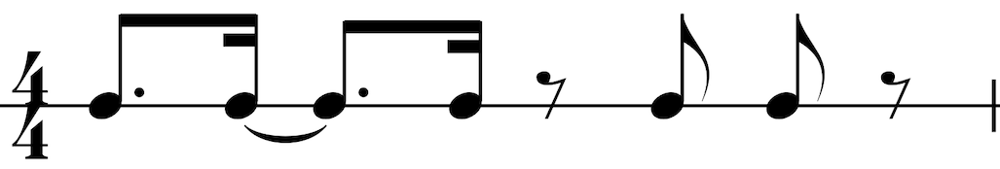
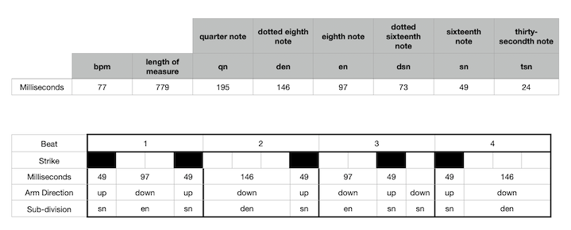

<br>
#### Week 4: Microcontroller Programming
I set out to write an Arduino code that would control a servo motor. The servo motor is to behave as a drummer's stick, playing various rhythms. I made sure to write the code in such a way that the tempo can be easily changed without the need for time consuming changes to the code.
This is the rhythm in western notation:

This is a key showing the sub-divisions of the beat and a representation of the rumba clave in milliseconds:

<code>#include <Servo.h>
int x=30; //TEMPO <br>
float m=60/x*1000; <br>
float qn=m/4; //quarter note<br>
float en=m/8; //eighth note<br>
float sn=m/16; //sixteenth note<br>
float tsn=m/32; //thirty secondth note<br>
float den=m/16*3; //dotted sixteenth note<br>
int servoPin=4;<br>
int servoU=45;<br>
int servoD=0;<br>
Servo myServo;<br>
void setup() {<br>
// put your setup code here, to run once:<br>
Serial.begin(9600);<br>
myServo.attach(servoPin);<br>
}<br>
<br>
void loop() {<br>
// put your main code here, to run repeatedly:<br>
<br>
myServo.write(servoD);<br>
delay(sn);<br>
myServo.write(servoU);<br>
delay(en);<br>
myServo.write(servoD);<br>
delay(sn);<br>
myServo.write(servoU);<br>
delay(den);<br>
myServo.write(servoD);<br>
delay(sn);<br>
myServo.write(servoU);<br>
delay(en);<br>
myServo.write(servoD);<br>
delay(sn);<br>
myServo.write(servoU);<br>
delay(sn);<br>
myServo.write(servoD);<br>
delay(sn);<br>
myServo.write(servoU);<br>
delay(den);<br>
}</code>